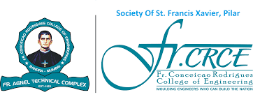

ABOUT US
The Grand Chessboard

About College
Fr. Conceicao Rodrigues College of Engineering (FR.CRCE) is a top private Autonomous engineering
institution in the heart of Mumbai. The college emphasizes on innovation and comprehensive
education, focusing on the latest technological trends while fostering a holistic learning
environment. With the implementation of NEP 2020, FR.CRCE will create its own curriculum from
this year. It has earned an "A" grade from the National Assessment and Accreditation Council
(NAAC). Its Computer Engineering department is also accredited by the National Board of
Accreditation (NBA).
About Student Council
The Student Council at Fr. Conceicao Rodrigues College of Engineering (Fr. CRCE) is the hub of
student activity on campus. With a team of dedicated representatives, the council organizes
events, facilitates communication with the administration, and fosters a strong sense of
community. By hosting a variety of activities, from workshops to festivals, the Student Council
creates a vibrant and inclusive college experience, playing a key role in shaping the culture at
Fr. CRCE.